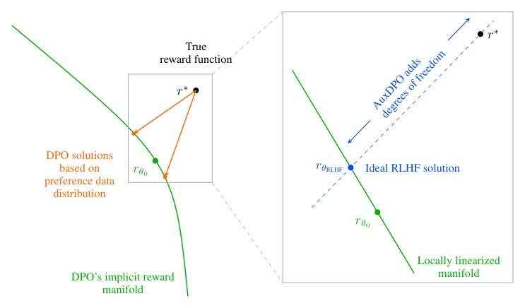
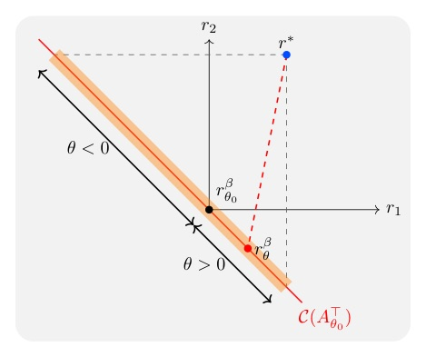
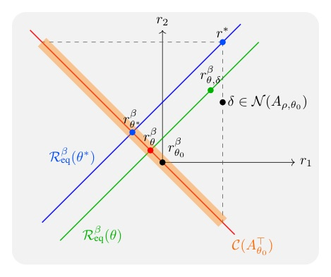
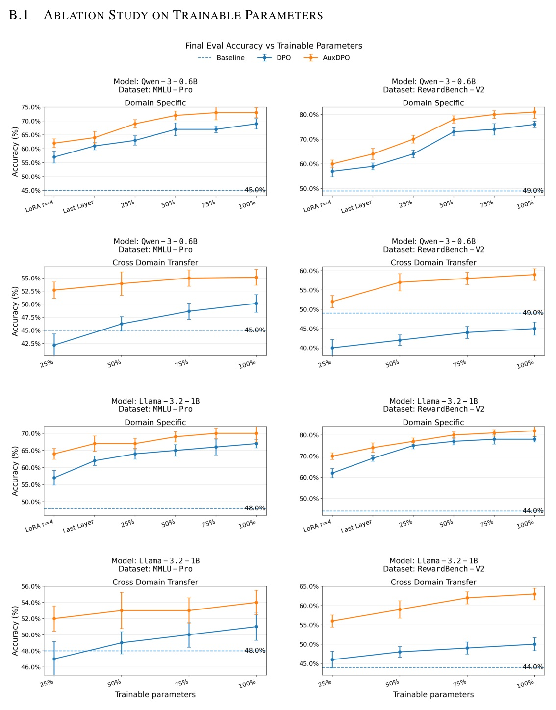

Venue：ICLR 2026 官方頁列為 Oral（Oral Session 5C · Reinforcement learning II）；arXiv PDF 頁首仍標 Preprint · 選題：daily_discover arXiv API 429 → 以 ICLR 2026 oral 清單 web search 兜底（回溯：非當日新論文） · Reviewer 資料：未抓取
DPO 的推導默認 policy 是 tabular。換成參數量 d ≪ |S||A| 的 LLM，最小化 DPO loss 等於把真 reward r* 依 preference 次數加權、KL 投影到一個 d 維的 implicit-reward 流形上；r* 不在流形上時，就算資料無限、優化完美，也會出現偏好反轉、reward 低於 base。AuxDPO 在 RLHF 等價類的 null space 加輔助變數 δ，讓投影落回 RLHF 最佳解。


r* = rβθ* + δ，δ ∈ N(Aρ,θ0)。DPO 被迫用 θ 去擬合 r* 的全部，包括那段本來就不影響 policy 的 null-space 分量 δ —— 擬合不了，就由 preference 次數決定怎麼妥協。給 δ 一個專屬變數吸收掉，θ 只需要學「有效分量」；由 rank–nullity，(θ, δ) 合起來可覆蓋整個 ℝm，r* 不再 misspecified。
Prop. 9：在 Prop. 1 的假設下、β 足夠大時，AuxDPO 目標 (7) 的最小值落在 θ = θ*（誤差 O(ε)），即 RLHF 的最佳 policy。

| AuxDPO knob（8B） | 值 |
|---|---|
| λnull | 1.0 |
| λamp | 0.01 |
| delta_cap（tanh 上界） | 1.0 |
| aux_lr | 5×10−3 |
| batch / epochs | 4 / 1 |
| 精度 | FP32 權重 + bf16 autocast |
| Method | θ | πθ | πθ⊤r* |
|---|---|---|---|
| Base | 0 | [0.33, 0.33, 0.33] | 1.000 |
| DPO | 0.40 | [0.47, 0.21, 0.32] | 0.895 |
| IPO | 0.10 | [0.37, 0.30, 0.33] | 0.969 |
| DPOP | 0.10 | [0.37, 0.30, 0.33] | 0.969 |
| AuxDPO | −0.50 | [0.19, 0.51, 0.30] | 1.199 |
Base 列為編者依 θ0 = 0（uniform）計算，原表只寫出 base 期望 reward 的定義。
| Model · Dataset | DPO | AuxDPO | IPO | DPOP |
|---|---|---|---|---|
| Llama3.1-8B · MMLU-Pro ID | 57.14 | 63.26 | 59.18 | 61.22 |
| Llama3.1-8B · RB v2 OOD | 14.31 | 32.44 | 20.17 | 19.87 |
| Llama3.2-1B · RB v2 ID | 77.21 | 86.37 | 69.72 | 71.21 |
| Llama3.2-1B · RB v2 OOD | 14.11 | 43.27 | 20.42 | 18.76 |
| Llama3.2-1B · MMLU-Pro OOD | 6.25 | 12.52 | 14.58 | 4.16 |
| Qwen3-0.6B · MMLU-Pro OOD | 11.34 | 22.22 | 15.56 | 17.78 |
| Qwen3-0.6B · RB v2 OOD | −8.16 | 18.36 | −8.23 | −6.25 |
| Method | OOD overall | ID overall | Math OOD | Law OOD |
|---|---|---|---|---|
| Base | 25.37 | 25.37 | 11.77 | 27.25 |
| DPO | 27.06 | 46.60 | 16.51 | 23.61 |
| IPO | 31.73 | 47.17 | 17.99 | 27.88 |
| DPOP | 32.64 | 48.25 | 20.28 | 30.43 |
| AuxDPO | 39.26 | 51.95 | 22.26 | 34.50 |
Base 欄 OOD / ID 共用同一數值（原表 Base 只有一欄）。

| 8B full FT（GPU1–6） | DPO | AuxDPO |
|---|---|---|
| allocated (GiB) | 16.25 | 17.4 |
| reserved (GiB) | 25.94 | 81.2 |
| device-used, ROCm SMI (GiB) | 29.4 | 82.4 |
The design of DPO rests on the idealized assumption that the policy class is tabular, i.e., it includes every possible input-output conditional probability distribution.
DPO 的設計建立在一個理想化假設上：policy class 是 tabular 的，亦即包含所有可能的輸入—輸出條件機率分佈。§1, p.2
DPO loss minimization is equivalent to a weighted KL-projection of the true reward function r* onto the (parametric, lower-dimensional) manifold of reward functions induced by the policy class.
最小化 DPO loss 等價於把真 reward r* 加權 KL 投影到 policy class 誘導出的（參數化、低維）reward 流形上。§1 contribution 1, p.2
We show that failure modes arise due to the inherent misspecified geometry induced by the lack of model capacity, interacting with the frequencies of pairwise sampling.
我們證明這些失敗來自模型容量不足所造成的內在 misspecified 幾何，再與 pairwise 取樣頻率交互作用。§3.1, p.6
If we allow the search in the reward space to utilize additional degrees of freedom δ along this nullspace, then r* is no longer misspecified in this augmented representation.
若允許在 reward 空間的搜尋沿此 null space 多用一組自由度 δ，則在這個擴增表示中 r* 不再是 misspecified。§4.2, p.8
來源：arXiv 2510.20413 · ICLR 2026 Oral · Why DPO is a Misspecified Estimator and How to Fix It